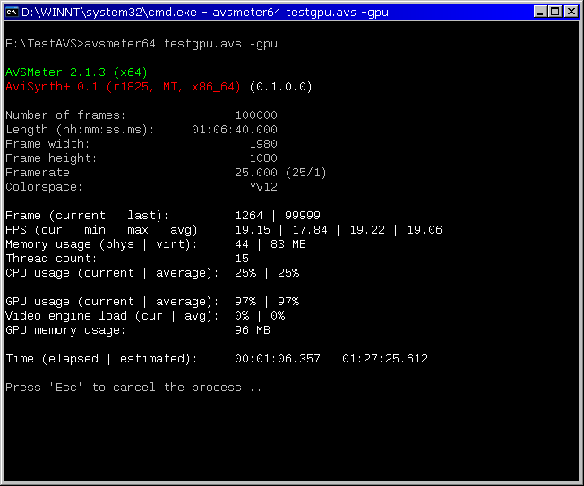

AVSMeter is a CLI (command line interface) tool that "runs" an
Avisynth script with virtually no overhead, displays clip info, CPU
and memory usage and the minimum, maximum and average frames
processed per second. It measures how fast Avisynth can serve frames
to a client application (x264, for example) and comes in handy when
testing filters/plugins to evaluate their performance and memory
requirements.

Usage: AVSMeter script.avs
[switches]
Switches
-avsinfo
Display Avisynth info (1)
-info [-i]
Display clip info
-log [-l]
Create log file (2)
-csv
Create csv file (3)
-gpu
Monitor GPU/VPU usage (4)
-range=first,last Set frame range (5)
-timelimit=n
Set time limit(seconds) (6)
-priority=n
Set process priority (1:low, 2:normal, 3:high)
(1) Displays extended
info about the installed Avisynth version. If a custom avisynth.dll
is specified in the ini file, info about that file will be
displayed.
(2)
Creates a log file with various details about the installed Avisynth
version, clip details, runtime results, a copy of the script and a
performance data table with the measured details about each
frame/frame interval.
Note: The numbering of the frames in the performance
data section is not zero-based, i.e. the first frame is 1, not 0.
(3)
Creates a .csv file containing the performance data formatted as
comma-separated values for direct import in Excel or a similar
spread sheet program (OpenOffice, LibreOffice).
Note: The numbering of the frames in the .csv file is
not zero-based, i.e. the first frame is 1, not 0.
(4)
Enables display of the GPU/VPU usage which of course is only useful
if a filter that uses the GPU is in the chain. AVSMeter uses GPU-Z
to access the graphics card sensors through a shared memory space.
GPU-Z has to be running (the window can be minimized to the system
tray) before running AVSMeter.
(5)
Specify the range of frames to be processed. For example,
"-range=1500,1999" processes 500 frames starting at frame 1500.
Without "-range" AVSMeter processes all frames of the script.
(6)
Specify a time limit (in seconds) after which the program stops
reading frames and terminates.
INI file settings
AVSMeter checks if a settings file ("AVSMeter.ini") exists in the
directory from where it is started. If not, it will be created with
the default settings.
Supported settings for the INI file (default values in red):
"AVSDLL":
The user can specify the avisynth.dll to be used.
This has to be a fully qualified path, for example
"AVSDLL=d:\apps\avisynth\avisynth.dll" (without the quotes).
The default is an empty string which means that AVSMeter will
attempt to load avisynth.dll through the standard Windows search hierarchy.
"DisplayFPS" (0 or 1):
If set to "1", frames/second is printed to the console.
"DisplayTPF" (0 or 1):
If set to "1", time/frame (in milliseconds) is printed to the
console.
"CreateLog" (0 or 1):
Creates a log file with various details about the installed Avisynth
version, clip details, runtime results, a copy of the script and a
performance data table with the measured details about each
frame/frame interval.
Note1: The command line switch "-log" or "-l"
overrides the INI setting.
Note2: The numbering of the frames in the performance
data section is not zero-based, i.e. the first frame is 1, not 0.
"CreateCSV" (0 or 1):
Creates a .csv file containing the performance data formatted as
comma-separated values for direct import in Excel or a similar
spread sheet program (OpenOffice, LibreOffice).
Note: The numbering of the frames in the .csv file is
not zero-based, i.e. the first frame is 1, not 0.
"PauseBeforeExit" (0 or 1):
If set to "1", pauses the program at the end and returns to the
console prompt only after pressing "ESC".
"ConUseSTDOUT" (0 or 1):
If set to "1", directs all console output to stdout. The default
setting "0" uses stderr except the "command line usage" message
which always goes through stdout.
"FrameRange" (first,last):
Specify the range of frames to be processed. "FrameRange=0,-1" processes all frames in the
script. "FrameRange=1500,1999" processes 500 frames starting at
frame 1500.
Note: The command line switch "-range" overrides the
INI setting.
"InvokeDistributor" (0 or 1):
For users of SEt's Avisynth MT: If set to "1", adds the
"Distributor" call internally if the script uses MT Mode 1~4 (via
"SetMTMode"). Note: Setting this value to "1" and adding the
Distributor call in the script will unnecessarily increase the
number of threads which leads to increased memory usage and
suboptimal performance. The "InvokeDistributor" setting is ignored
when using non-MT versions of Avisynth.
"AllowOnlyOneInstance" (0 or 1):
When set to "1", only one instance of AVSMeter can run at the same
time.
"UseColor" (0 or 1):
When set to "0", coloring of the console output is disabled.
"MonitorGPULoad" (0
or 1):
When set to "1", enables display of the GPU/VPU usage which of
course is only useful if a filter that uses the GPU is in the chain.
AVSMeter uses GPU-Z
to access the graphics card sensors through a shared memory space.
GPU-Z has to be running (the window can be minimized to the system
tray) before running AVSMeter.
Note: The command line switch "-gpu" overrides the INI
setting.
"ProcessPriority" (1, 2
or 3):
Specify the process priority for AVSMeter and all attached processes
(1: low, 2: normal, 3: high).
Note: The command line switch "-priority" overrides
the INI setting.
"TimeLimit" (1 - 999999):
Specify a time limit (in seconds) after which the program stops
reading frames and terminates. A setting of "-1"
disables this feature. This setting is ignored when the program is
invoked with the "-i" ("-info") switch which only determines the
clip properties.
Note: The command line switch "-timelimit" overrides
the INI setting.